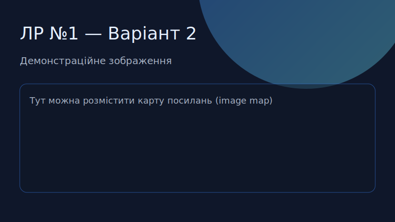

1 — Зображення

Клацніть прямокутну область, щоб перейти на Сторінку 3 (демонстрація MAP).
х — «FreshGrid Studio»
Демонструємо роботу тегів IMG та MAP.
2 — Опис
CSS Grid дає змогу будувати доволі складні макети, зберігаючи контроль над пропорціями. Для демонстрації ми наповнюємо блоки текстом, щоб перевірити поведінку при різних обсягах контенту. CSS Grid дає змогу будувати доволі складні макети, зберігаючи контроль над пропорціями. Для демонстрації ми наповнюємо блоки текстом, щоб перевірити поведінку при різних обсягах контенту.
3 — Технічні деталі
- <img usemap="#coverspots">
- <map name="coverspots">
- <area shape="rect" coords="..." href="...">
4 — Ресурси
5 — Додаткові приклади
CSS Grid дає змогу будувати доволі складні макети, зберігаючи контроль над пропорціями. Для демонстрації ми наповнюємо блоки текстом, щоб перевірити поведінку при різних обсягах контенту.